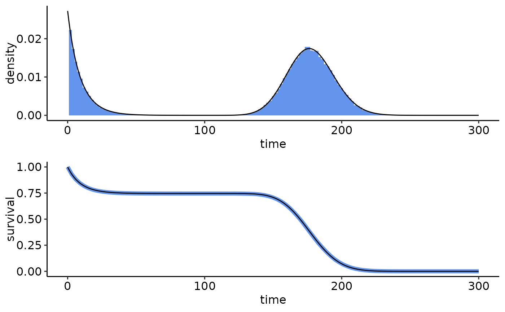
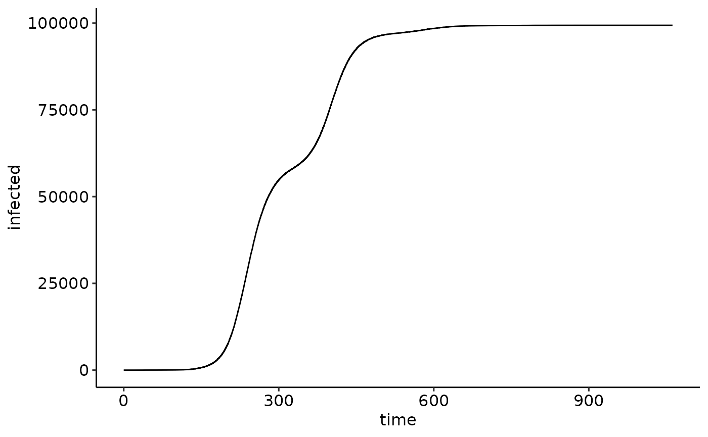

Custom time distributions (using C++)
Source:vignettes/articles/custom_time_distributions_cpp.Rmd
custom_time_distributions_cpp.RmdIntroduction
NEXTNetR provides a set of built-in time distributions
that can be used as transmission and recovery times in simulations, see
help(time_distributions). Additional distributions can be
defined by users through either R or C++ code. Here we discuss the C++
solution, which is significantly (orders of magnitudes!) faster, but
more complex. For the slower but simpler pure R solution, see
vignette("custom_time_distributions_r").
Loading the NEXTNetR package
We start with loading all required packages. If
NEXTNetRis not already installed, see the website for installation
instructions. To conveniently mix C++ and R code, we use the
cpp11 package together with decor. To
implement a new distribution, our C++ code must be able to see global
symbols related to the transmission_time class defined by
the NEXTNetR package. Unfortunately, R packages are
usually loaded in a way that prevents this. To work around this, we
therefore have to load NEXTNetR’s shared library manually
before importing the package. That way, we can specify
local=TRUE when we load the library to make symbols
globally visible. Note that this may not be required on all platforms.
Finally, we also load the ggplot2 and
ggpubr packages for plotting and set a nice theme.
# Make sure the NEXTNetR shared library is loaded with local=FALSE
# This has to be done *before* library(NEXTNetR)
nnR.dir <- find.package("NEXTNetR")
nnR.lib <- if (nzchar(.Platform$r_arch)) {
file.path(nnR.dir, "libs", .Platform$r_arch,
paste0("NEXTNetR", .Platform$dynlib.ext))
} else {
file.path(nnR.dir, "libs",
paste0("NEXTNetR", .Platform$dynlib.ext))
}
dyn.load(nnR.lib, local=FALSE, now=TRUE)
# Now we may load NEXTNetR
library(NEXTNetR)
# For cpp_source()
library(cpp11)
library(decor)
# For plotting
library(ggplot2)
library(ggpubr)
theme_set(theme_pubr())Implementing a custom time distribution in C++
To implement a custom time distribution, we have to implement the
time_distribution interface (i.e. abstract base class)
defined by the NEXTNet C++ library. The minimal set of functions an
implementation of that interface must provide are
virtual double density(interval_t tau) const;
virtual double survivalprobability(interval_t tau) const;If only these two functions are provided, random samples of your
distribution will be generated by generating a uniformly distribution
random value between 0 and 1 and computing the corresponding quantile.
Since we have not override the quantile function, the quantile will be
computed by numerically inverting the survival function using bisection,
which is slow. If there is a more efficient way of generating samples,
you will thus want to also override the sample function
This function must sample from the derived distribution conditioned
on \(t\) and modulated with \(m\), see help(time_functions)
for a discussion of these parameters. Often, generating samples from the
unmodified distribution, i.e. for \(t=0\) and \(m=1\) is considerably simpler. Since this
is, on unweighted networks, also by far the most common case, a typical
strategy is to only optimize this case, i.e. to do
virtual interval_t sample(rng_t &rng, interval_t t, double m) const override {
if ((t == 0.0) && (m == 1.0)) {
// generate sample from base distribution
return ...
}
// Use numeric inversion of the survival function for the general case
return transmission_time::sample(rng, t, m);
}Finally, if the quantiles can be computed more efficiently than be inverting the survival function, also override the quantile function
A mixture of existing distributions
The following file mixture_time.cpp implements a
mixture of \(n\) arbitrary
time distributions with given weights. It defines a class
mixture_time_impl which derives from the abstract base
class time_distribution and implements the
sample, survivalprobability, and
density methods. To create mixture distributions, it
provides a function mixture_time which converts the
parameters appropriately and returns an instance of the
mixture_time_impl as a transmission_time_R
(this type encapsulates C++ time distribution objects so that they can
be passed through R).
/* mixture_time.cpp */
#include <random>
#include <cpp11.hpp>
#include <cpp11/function.hpp>
#include "NEXTNetR/NEXTNetR_types.h"
#include "nextnet/random.h"
using namespace cpp11;
struct mixture_time_impl : public virtual transmission_time {
virtual interval_t sample(rng_t &rng, interval_t t, double m) const override {
if ((t == 0.0) && (m == 1.0))
return times.at(pick(rng)).get()->sample(rng, 0.0, 1.0);
return transmission_time::sample(rng, t, m);
}
virtual double survivalprobability(interval_t tau) const override {
double p = 0.0;
for(std::size_t i=0; i < times.size(); ++i)
p += weights.at(i) * times.at(i).get()->survivalprobability(tau);
return p;
}
virtual double density(interval_t tau) const override {
double p = 0.0;
for(std::size_t i=0; i < times.size(); ++i)
p += weights.at(i) * times.at(i).get()->density(tau);
return p;
}
std::vector<transmission_time_R> times;
std::vector<double> weights;
mutable std::discrete_distribution<std::size_t> pick;
};
[[cpp11::linking_to("BH")]]
[[cpp11::linking_to("NEXTNetR")]]
[[cpp11::register]]
SEXP mixture_time(list times, doubles weights) {
// Validate parameters
if (times.size() != weights.size())
throw std::runtime_error("number of distributions and weights must agree");
// Create object
auto r = std::make_unique<mixture_time_impl>();
// Set individual distributions and weights
r->times.reserve(times.size());
r->weights.reserve(times.size());
double ws = 0.0;
for(R_xlen_t i=0; i < times.size(); ++i)
ws += weights[i];
for(R_xlen_t i=0; i < times.size(); ++i) {
r->times.push_back((transmission_time_R)times[i]);
r->weights.push_back(weights[i] / ws);
}
r->pick = std::discrete_distribution<std::size_t>(
weights.begin(), weights.end());
// Return created object
return transmission_time_R(r.release());
}We could now compile this function externally and load the resulting
shared library into R. However, cpp11 provides as simpler
way in the form of the cpp_source() function. This function
takes care of compiling, linking and loading the code, and makes all
functions marked with [[cpp11::register]] available to
R.
cpp_source('mixture_time.cpp', dir="/tmp/test", clean=FALSE, cxx_std="CXX17")We can now use mixture_time as we would use any of the
other distributions provided by NEXTNetR. For example, to create a
mixture of an exponential distribution with mean 5 and a log-normal
distribution with mean 200 and variance 500, weighted so that 30% of
samples come from the exponential distribution, we can do
psi <- mixture_time(times=list(exponential_time(1/10),
lognormal_time(200, 500)), weights=c(0.3, 0.7))To test this we sample from the newly created distribution using
time_sample
samples <- time_sample(1e5, psi, t=10, m=2)and use time_density and
time_survivalprobability to compare the distribution of our
samples (in blue) to the theoretical distribution (in black) to check
that everything works correctly
samples.ecdf <- ecdf(samples)
ggarrange(
ggplot() +
lims(x=c(0, 300)) +
geom_histogram(data=data.frame(time=samples),
aes(x=time, y=after_stat(density)),
binwidth=2, fill="cornflowerblue") +
geom_function(fun=time_density, n=1000,
args=list(timedistribution=psi, t=10, m=2)),
ggplot() +
lims(x=c(0, 300), y=c(0,1)) + labs(x='time', y='survival') +
geom_function(fun=function(x) 1 - samples.ecdf(x),
color="cornflowerblue", linewidth=2) +
geom_function(fun=time_survivalprobability, n=1000,
args=list(timedistribution=psi, t=10, m=2)),
ncol=1
)
Simulations using our custom distribution
Our custom distribution in simulations in the same way as built-in
distributions, see vignette(NEXTNetR) for a step by step
explanation of this
nw <- erdos_renyi_network(1e5, 5)
sim <- simulation(nw, psi)
simulation_addinfections(sim, nodes=c(1), times=c(0.0))
events <- simulation_run(sim, stop=list(total_infected=300e3))
ggplot(events) +
geom_line(aes(x=time, y=infected))